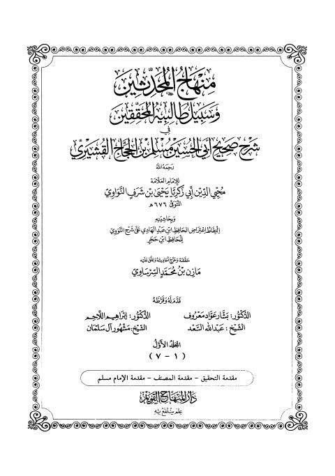

Downloads need an internet connection.
منهاج المحدثين وسبيل طالبيه المحققين في شرح صحيح أبي الحسن مسلم بن الحجاج القشيري- مدمجة
Authors: يحيى بن شرف النووي
Editors: مازن السرساوي
Publishers: دار المنهاج القويم
▫️ العنوان: منهاج المحدثين وسبيل طالبيه المحققين في شرح صحيح أبي الحسن مسلم بن الحجاج القشيري- مدمجة ▪️ المؤلف: #محيي_الدين_يحيى_بن_شرف_النووي ▫️ المحقق: #مازن_السرساوي ▪️ الناشر: #دار_المنهاج_القويم ▫️ تاريخ النشر: 1441هـ 2020م ▪️ بلد النشر: دمشق، #سورية ▫️ الطبعة: 1 ▪️ عدد الأجزاء: 15 ▫️ الصفحات: 8096 ▪️ نوع الوعاء: #كتاب ▫️ التصنيف الرئيسي: #الحديث_وعلومه ۪